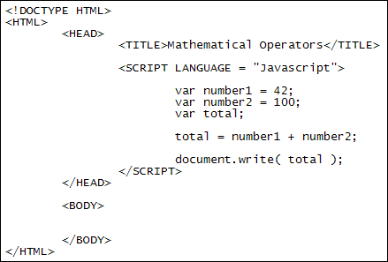

Mathematical Operators
You can use the mathematical operators with variables. This allows you to add up, multiply, subtract, and divide. The mathematical operators are these:
- The plus symbol ( + ) is used for addition
- The minus symbol ( - ) is used for subtraction
- The asterisk symbol ( * ) is used for multiplication
- The forward slash symbol ( / ) is used for division
- The percentage symbol ( % ) is used for modulus calculations
var number1 = 42;
var number2 = 100;
var total;
total = number1 + number2;
document.write( total );
Your code should then look like this:

Save your work and load the page in a browser. You should see the number 142 written to the page. (If you don't see anything, check your code to make sure it looks exactly like ours.)
What we did here is to store the numbers 42 and 100 into two different variable, number1 and number2. We then set up a third variable called total. On the fourth line of the code we have this:
total = number1 + number2;
To the right of the equal sign are our two variables, with a plus symbol between the two. The plus symbol this time doesn't mean join together (concatenate). This time the plus symbol means "add up". Javascript doesn't get confused because the contents of both variables are numbers, and it knows it should be adding them up, not concatenating.
As an example of the above, try putting quote marks around the 100:
var number2 = "100";
When you save your changes and refresh the page in the browser, you'll see it writes this:
42100
Putting quotes around the 100 turns it into text. Now that one of the variables is text and the other is a number, Javascript concatenates the two rather than adds them up.
Exercise
Remove the quote marks from around 100. Change the plus symbol into a minus
symbol. Save your changes and refresh the page in your browser. What total do
you get now?
Exercise
Change the minus symbol into the symbol for multiplication, an asterisk symbol
(*). Save your change and refresh the page in your browser. What total do you
get now?
Exercise
Change the plus symbol into the symbol for division. Save your change and refresh
the page in your browser. What's the new total?
You can use normal numbers with the mathematical operators. In the code below, we're adding up two numbers and storing the result in a variable:
var result;
result = 12 + 24;
document.write( result );
Javascript will add up the numbers on the right of the equal sign. When it
has finished adding, it will store the result in the variable on the left of
the equal sign.
Storing Javascript Objects in Variables
In the previous section we used an alert message and document.write with the various objects. This kind of thing:
alert ( window.innerWidth );
But you can store these values in variables as well. If you want to store the innerWidth value, for example, you can do it like this:
var width = window.innerWidth;
Once you have the value stored in a variable you can do other things with it later:
alert( width );
In the next part, we'll take a look at something called Operator Precedence.